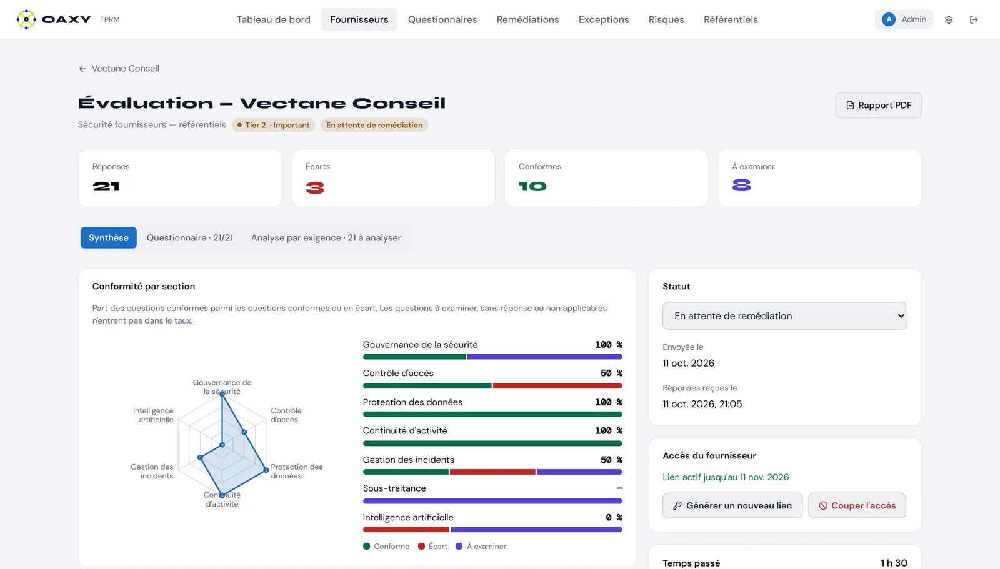
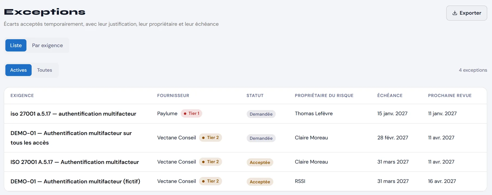

Programme TPRM géré
- Vos évaluations menées de bout en bout
- Vos résultats consultables sur la plateforme
- Exceptions et remédiations suivies dans le temps
Contrat annuel, selon le nombre de fournisseurs suivis et leur criticité
Risque fournisseurs · ETI régulées
Évaluations TPRM pilotées par un expert, outillées par l’IA.
OAXY mène vos évaluations de fournisseurs de bout en bout, avec une plateforme qui vérifie ce que vos fournisseurs déclarent.

Cas réel, anonymisé
Un an de relances pour obtenir les réponses d’un fournisseur. Cinq minutes pour les analyser avec OAXY TPRM.
Réponses obtenues sans OAXY, après un an de relances. Leur analyse avec OAXY TPRM a pris cinq minutes.
Le constat
Questionnaires envoyés, relancés, reçus incomplets. Le suivi vit dans des fichiers Excel et des boîtes mail.
Le fournisseur répond « Non » à l’IA ou au transfert hors UE. Personne n’a le temps de vérifier.
Un écart est accepté « temporairement ». Sans propriétaire ni échéance, il le reste.
La méthode
Registre des fournisseurs, données traitées, exposition à l’IA. Tiering automatique selon votre grille.
Questionnaire envoyé par lien unique. Chaque réponse est comparée à la réponse attendue.
Les réponses vagues, incohérentes ou manquantes sont repérées et confrontées aux sources publiques.
L’IA prépare, l’expert valideRemédiations, exceptions et réévaluations planifiées selon le niveau de criticité.
La différence
OAXY TPRM reprend vos questionnaires et vos référentiels tels qu’ils sont. Pas de projet de paramétrage.
Votre questionnaire Excel, importé et rattaché automatiquement à vos exigences.
Vos référentiels : ISO 27001, DORA, politiques internes.
Votre grille de tiering et vos propres statuts de suivi.
Un écart accepté n’est pas un écart oublié. Chaque exception revient en revue, et une vue d’ensemble montre quelles exigences en cumulent le plus.
Non satisfaite, rattachée à votre référentiel
Le besoin métier qui motive l’exception
Les mesures qui réduisent le risque
Propriétaire du risque et validateur
Date de fin et fréquence de revue
L’engagement pris par le fournisseur

Le contexte
| Texte | Ce qu’il exige vis-à-vis des fournisseurs |
|---|---|
| DORA, art. 28 à 30 | Gérer le risque lié aux prestataires TIC, tenir un registre d’information, encadrer les contrats |
| NIS2, art. 21 | Sécuriser la chaîne d’approvisionnement |
| RGPD, art. 28 | Ne recourir qu’à des sous-traitants offrant des garanties suffisantes |
| AI Act, art. 26 | Encadrer l’usage des systèmes d’IA, y compris ceux intégrés aux outils achetés |
L’offre
Contrat annuel, selon le nombre de fournisseurs suivis et leur criticité
Abonnement annuel, accessible aussi après un programme géré
Qui est derrière OAXY
Consultant en gouvernance, risque et conformité, spécialisé dans le risque fournisseurs. J’ai rempli ces tableurs, relancé ces fournisseurs et défendu ces exceptions en comité. OAXY TPRM est l’outil que j’ai construit pour mes propres missions.
Profil LinkedIn3 ans dans un groupe d’assurance international
Pilotage TPRM dans un acteur de l’investissement
OAXY TPRM utilisé en mission, sur des cas réels
Prochaine étape
Vos fournisseurs critiques et votre méthode actuelle.
Cinq fournisseurs critiques évalués, résultats en quatre semaines.
L’ensemble de vos fournisseurs, suivis dans la durée.